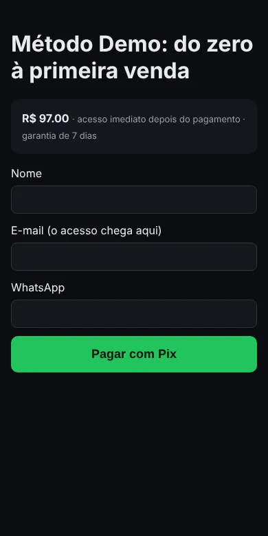
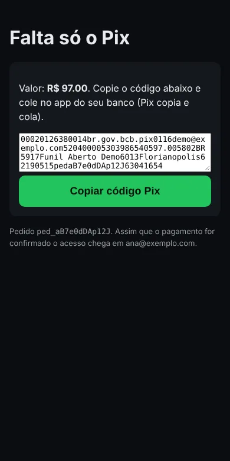
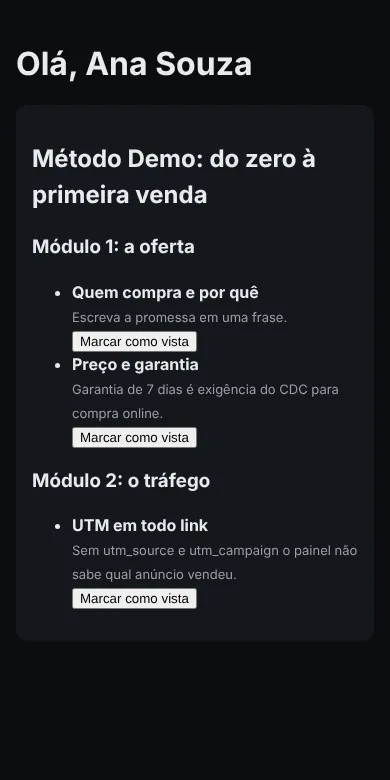
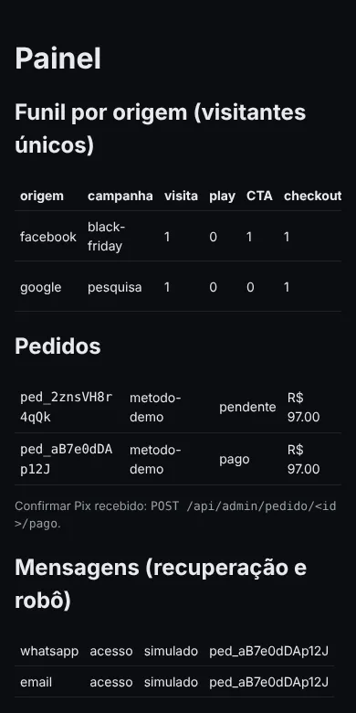

A operação de venda online inteira num processo só.
Tracker, VSL, checkout, área de membros, recuperação de carrinho, robô de WhatsApp, público de remarketing e biblioteca de anúncios. Em vez de sete assinaturas que não se falam, um programa em Python que roda com python3 app.py.
“Não faria mais sentido todos criarem uma só?” — a pergunta no X que deu origem a este repositório, em 13/11/2026.
Sete ferramentas, sete bancos de dados. Ou um.
Uma pessoa, uma linha do tempo
Cada ferramenta é um módulo que grava eventos sobre o mesmo visitante. Por isso “qual anúncio vendeu?” deixa de ser uma integração entre cinco painéis e vira uma consulta no mesmo banco.
visitante ─┬─ evento ─ pedido ─ membro ─ mensagemAcompanhe a Ana do anúncio até a aula.
Cada passo abaixo é o que acontece de verdade no código, com a linha que entra no banco. Toque num passo ou use os botões.
Capturadas a 390 px num navegador de verdade.




O checkout não cobra taxa porque não passa por ninguém.
O código Pix copia e cola é um texto no padrão do Banco Central, com um dígito verificador no fim. O funil-aberto monta esse texto direto para a sua chave. O teste confere o resultado contra o exemplo do próprio manual do BR Code:
A confirmação do pagamento vem do webhook do seu banco (assinado com HMAC) ou de um clique no painel. Quem prefere cartão aponta o produto para qualquer link de pagamento.
Quatro arquivos, nenhuma dependência.
O único arquivo que fala SQL. Visitante, evento, pedido, membro, mensagem, conversa e anúncio no mesmo SQLite.
Gera o BR Code e o dígito verificador CRC16. Determinístico: mesma entrada, mesma saída.
Meta Conversions API, WhatsApp (Evolution ou API oficial), e-mail e Biblioteca de Anúncios. Sem credencial, tudo fica “simulado”.
As páginas e a API. Produtos, sequência de recuperação e fluxos do robô são dados no config.json.
Limites, ditos antes.
- O Pix estático não avisa sozinho que foi pago: a confirmação depende do webhook do banco ou do clique no painel.
- Ainda não desenha o QR Code, só o copia e cola.
- A API da Biblioteca de Anúncios só devolve anúncio comercial na UE e no Reino Unido. No Brasil, o spy dá o link da biblioteca pública e guarda o que você salvar.
- Pela API oficial do WhatsApp, mensagem livre só até 24 horas depois da última fala da pessoa. Fora disso, precisa de modelo aprovado.
- Um processo e um SQLite: serve uma operação. Muitas réplicas pedem outro banco, e só o nucleo.py muda.